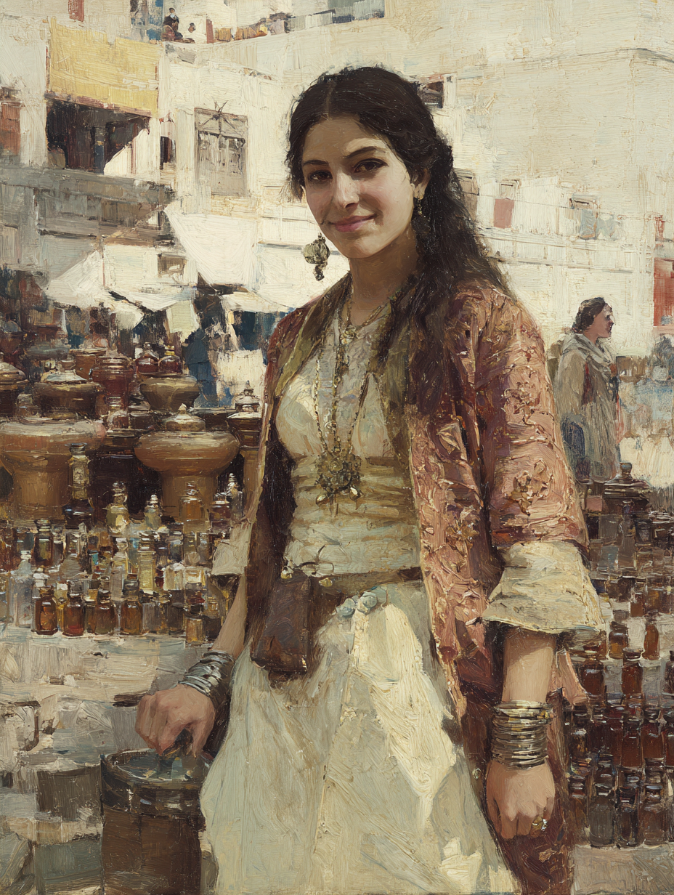

Farideh al-Saffar
Perfumer of Baghdad · The Coppersmith's Granddaughter

Arab / Baghdad · Aged Twenty-Six
On the Subject
Farideh was born into a Baghdad merchant family — her grandfather worked copper, her father moved up into perfumes and luxury oils, and Farideh inherited the trade and improved on it. She studied at one of the city's madrasas, where she picked up Turkish and learned the chemistry of scent-extraction from a teacher who had once worked in the Caliph's own gardens. Her family business included river-trade up and down the Tigris, and as a young woman she spent months on her family's barges learning the routes between Baghdad and Basra.
What sets Farideh apart from the dozen other perfumer-merchants in the bazaars is that her elixirs work — really work. She enchants them. She does not call this magic; she calls it skill. The arcane circles of Baghdad are wider awake than the bazaars know, and she had access through her madrasa years to enough fragments and rumors that she put it together herself. Her customers don't ask why their love-spell perfume actually attracts attention, or why the courtesan's revealing-scent really does break a mirage. They just pay handsomely and ask for more.
She travels the Silk Road now, trading rare perfumes and using her arcane scents to enthrall and heal. Her skills make her a prized guest at courts and bazaars.
Faculties & Saving Throws
Rolled array 12, 13, 13, 15, 16, 18 · Human +1 to all six · Trader feat +1 Cha
Bearing on the Route
Skills
| Skill | Bonus | Source |
|---|---|---|
| Deception | +7 | Bard |
| Persuasion | +9 | Guild Artisan + Expertise |
| History | +4 | Bard |
| Performance | +9 | Bard + Expertise |
| Insight | +4 | Guild Artisan |
Class Features
Charisma is her spellcasting ability. Spell save DC 15 · Spell attack +7. Uses an instrument or arcane focus. Spell slots: 4 × 1st · 2 × 2nd.
One creature within 60 ft. (other than herself) gains a Bardic Inspiration die (d6 at L3); they may add it to one ability check, attack roll, or saving throw made within the next 10 minutes. Uses per long rest: 5 (= Cha mod). Recovers on long rest until L5.
Adds half her PB (rounded down: +1) to any ability check that doesn't already include her proficiency bonus.
During a short rest, any allies who hear her performance and spend Hit Dice regain an extra d6 per Hit Die spent.
Doubles PB on two skill proficiencies. Chosen: Persuasion and Performance — both at +9.
She can spend 1 hour and the listed resources (gp + spell slot) to create elixirs. Elixirs are used as a bonus action, target within 5 ft. She may possess up to 3 elixirs at a time; making a fourth causes the oldest to lose its magic unless she spends a Bardic Inspiration die. Others can carry her elixirs but must treat them as normal objects (no bonus-action use).
| Currently Prepared | Cost to Make | Chgs | Effect |
|---|---|---|---|
| The Enduring Ivy | 25 gp + 1st-level slot | 2 | Grants target 1d6 temporary HP. |
| The Rose of Qaf | 50 gp + 2nd-level slot | 2 | Con save vs DC 15 or charmed by her for 1 hour or until damaged. Target doesn't know it's charmed. |
| The Miragebane | 50 gp + 2nd-level slot | 3 | Con save vs DC 15 or shapechanger reveals true form; reveals if creature is non-native to this plane; prevents target from turning invisible or shapechanging for 10 minutes. |
- She can identify a humanoid's specific scent and never forget it.
- She learns detect poison and disease as a bonus bard spell; it does not count against her spells known. She may cast it without components or slot once per long rest (as if smelling the air), or normally with a slot + Bardic Inspiration die.
- As a bonus action, by spending a Bardic Inspiration die she focuses her sense of smell for 10 minutes: advantage on Perception checks relying on smell, and advantage on Insight checks to detect lies within 30 ft.
Spells
Cha · DC 15 · Atk +7 · 4 × 1st, 2 × 2nd
Vicious Mockery — 1d4 psychic, target with disadvantage on next attack roll. 60 ft, Wis save.
Minor Illusion — Sound or image, 1 minute, 5-ft. cube.
- Healing Word — bonus-action heal, 60 ft, 1d4+5.
- Charm Person — Wis save, 1 hour. Conversational handle.
- Disguise Self — 1 hour illusion; fits perfumer-courtesan flavor.
- Sleep — 5d8 HP-pool falls unconscious. Narratively a "sleeping draught" disguised as one of her perfumes.
- Suggestion — Wis save, 8 hours. Her court-and-bazaar workhorse.
- Detect Thoughts — Wis save, 1 minute concentration. A perfumer who "reads" customers; pairs flavorfully with Heightened Senses' lie-detection bonus.
From College of Scent — free, 1/day no slot, or normal with a slot + bardic die.
Feat
- +1 Charisma → final Cha 20.
- She always knows the approximate value of an item; she is impossible to scam.
- Advantage on Persuasion and Deception checks when bargaining for the price of any item or service — buyer or seller.
Background — Guild Artisan (Perfumery)
She has fellow members of the Perfumers' Guild of Baghdad and affiliates in major Silk Road cities. They will provide her lodging, food, and intelligence on local markets. Her Guild membership is a form of formal identification.
She makes her living blending and selling scents, both mundane and — privately — arcane. Her customers do not always know the difference.
Your Journey
Lifepath · rolled and chosen entries from the Silk Road book
Met an important figure — friendly attitude.
Somewhere in her travels — perhaps a Baghdad poet, an emir at a Samarkand court, a Sufi sect leader who admired her perfumes — she earned the goodwill of someone with real social weight. GM-assigned, not yet named.
Worked on a ship — gains Sea Vehicles proficiency.
As a young woman she spent months on her family's Tigris river-barges, learning the routes between Baghdad and Basra. She can sail, navigate by water, and is comfortable on deck.
Profession
Silk Road PEX system · Apprentice rank
The Right Price (apprentice ability) — When she attempts to determine the price of an object using Insight or an appropriate tool (perfumer's supplies, for example), she has advantage on the roll.
Charisma Floor (apprentice baseline) — Any Charisma-based ability check cannot roll lower than 7. Treat any Cha-check die result below 7 as 7. At her Cha 20 / +5 mod, her effective Cha-check floor is 12.
The Merchant track is her family's inheritance and her natural lane. Higher-rank PEX purchases — Mark of Quality, Master of the Bazaar, Open Doors — all fit her trajectory but cost PEX she has not yet earned. She is at the formal beginning of a trade her household has practiced for two generations.
Equipment
- Rapier — 1d8 piercing; finesse; +5 to hit / 1d8+3. Elegant, court-appropriate sidearm.
- Hanchar — Silk Road dagger; 1d4 slashing, finesse, light, handy (may deal piercing); +5 to hit / 1d4+3.
- Shortbow — 1d6 piercing; ammunition 80/320, two-handed; +5 to hit / 1d6+3. With 20 arrows.
- Studded Leather — light armor; AC 12 + Dex; takes full Dex modifier; no Stealth disadvantage. Final AC 15.
- Lyre — primary; she casts most spells with it.
- Tanbur — long-necked period stringed instrument of the Islamic world.
- Lute — carried for variety of repertoire.
- Elixir toolkit — perfumer's supplies, vials, alembics, herb cuttings, distillation equipment.
- Carved cedar chest — holds her current three prepared elixirs.
- Set of fine clothes — Baghdad court-class, suitable for performance at court or in a wealthy patron's bazaar-stall.
- Letter of introduction — from her Perfumers' Guild.
- Favored scented oil — rose-of-Qaf base, for personal use.
- Scribe's small kit — ink, quill, paper; for noting recipes and customers.
- Belt pouch
- A share in the family's Baghdad warehouse and a small river-boat — used by her brother; she returns to Baghdad rarely.
Personality
"Every scent tells a story. Sit a moment — let me read yours."
"Every market is a meeting of strangers. My work is what makes them friends — or at least keeps them civil."
"My madrasa teacher gave me my first real recipe. She also gave me my first warning. Both still hold."
"I trust my own nose more than any other source — including, sometimes, when it's wrong."
Connections
- Nazim ibn Yusuf — She met him at the House of Wisdom in Baghdad when she was nineteen and still her father's apprentice, sent across town to fetch a sealed manuscript on rose-distillation that her madrasa teacher had borrowed and forgotten to return. Nazim was in the next reading-stall, copying a fragment of Old Turkic onto vellum with a stylus she remembers because it smelled, faintly, of bone. He looked up when she sat down, nodded, and went back to his work. She left the next morning with the manuscript and the smell of his ink, and did not see him again for six years. She remembers him as the soft-spoken Turkic scholar who did not look down on a perfumer for being a perfumer. She is fairly sure he doesn't remember her at all.
- Aymara Flameshaper — From Farideh's side: the caravan-guard with the greataxe and the strange unfocused gaze who did not flinch from her wares the way most steppe-folk did, who took her rose-of-Qaf and held it as if she were holding a small living thing. Farideh paid attention. She does not pay attention to many caravan-guards. The vial she gave Aymara was not the cheapest one in her chest. She has not asked Aymara why, and she has not asked herself why, either.
She reads a room by its scent before she reads it by its faces, and I have never known her to read either wrong: place her near any negotiation in which I would otherwise be lied to.